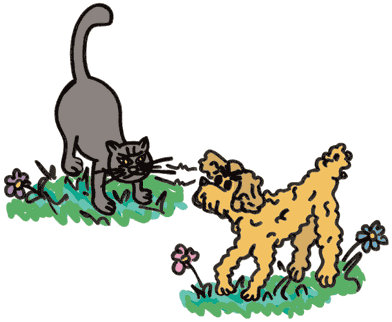

L’ora della meditazione
Se ne stava un mattino a miagolare
sul fine ultimo del bere e del mangiare
sdraiato nel giardino, sotto il muro
il saggio Anselmo, seguace d'Epicuro.
“De Rerum Natura” meditava
e intanto due salsicce digeriva
chidendosi rapito e sopraffatto
se avea più carboidrati un topo o un ratto.
E non riuscendo a sciogliere il dilemma
Anselmo s'assopì con grande flemma
e onusto di saggezza non s'avvide
dell'ombra all'orizzonte che lo irride.
E mentre il sole ammicca e già declina
e al gatto si riscalda un pò la schiena
irrompe Fiocco il cinico vetusto veterano nichilista
agnostico e un tempo extraparlamentare
nell'ala intransigente di sinistra.
Esperto allocco nella guerriglia urbana
raggiunge il nostro saggio, fin dentro la sua tana.
“Che dormi, che rifletti vecchio pagliaccio
molliccio acchiapparatti inconcludente
quì ci voglion fatti e non la mente!
Ma va a dormire in alto sopra i tetti
e via quel sederaccio coi rattoppi!!!!!"
Espulso dalle braccia di Morfeo
Anselmo focalizza il muso di quel reo
e gli rifila perle di saggezza
sopra il groppone mentre l'altro sorpreso già s'incazza.
Fu la diatriba dotta e illuminata
fra i due fieri sapienti che si sfidano intanto
con la bava fra i denti.
Si formò alla fine un crocicchio di persone
e vista la grandissima cagnara
alfine fu chiamata una televisione.
Passava lì per caso Ugo della stradale
villano e un pò cialtrone
vecchio gatto corrotto ormai quasi in pensione.
Quand' era alla sradale pare
che prese multe persino al Viminale.
Eroe per caso che ficca il suo naso
la dove non deve Ugo interviene provvede e stravede
e sistema per bene i due sapientoni
con graffi e spintoni.
Sul bellicoso cane nichilista
ed il pensiero debole del gatto
seguace di Cacciari e di Vattimo
visto e considerato l'antefatto
ancora si discute nel salotto
mondano e qualunquista di Costanzo
verso l'ora di pranzo.
E Ugo ormai in pensione
avendo già scontato il suo reato
di tanto in tanto allenta la tensione
fra etti di filetto di salmone
e morbido prosciutto affumicato.
M.J.M Catania ottobre 98

Fiocco: Fiocco il filosofo progressista.
Anselmo: Anselmo il mistico, contemplativo, meditabondo, rapito, colto latinista, esegeta, studioso di filosofia antica e arte culinaria. Seguace d'Epicuro nonchè untore di tappezzerie.